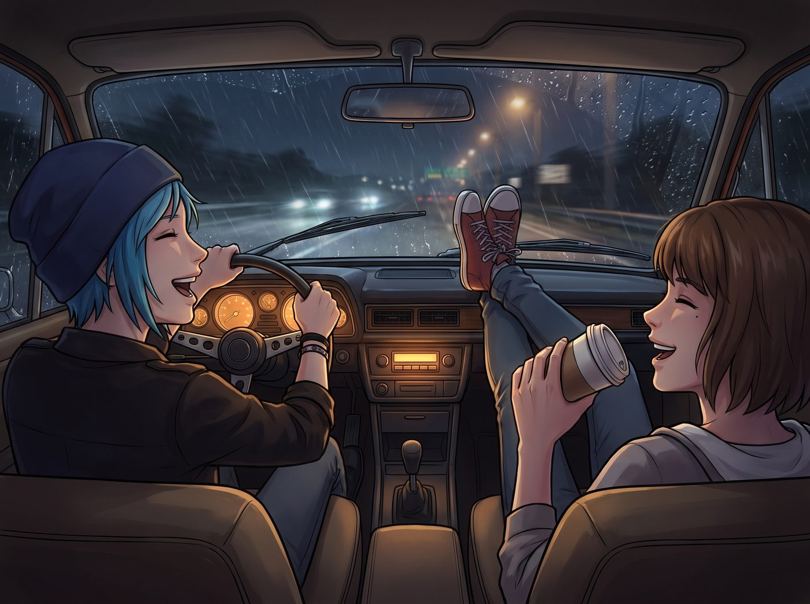

回程電台與宿舍撞見

一、深夜電台
老皮卡在暴雨中穿過華盛頓州與俄勒岡州交界,收音機自動搜尋信號時,跳進了一個公共文化電台的深夜專題訪談。
主持人用一種刻意壓低、氣聲十足的語調,正採訪一位策展人,慢條斯理地談論著什麼「重構後現代微型社區的安全空間」;緊接著,又是一條公益廣告,呼籲聽眾在食用有機酪梨時,反思其中隱含的階級特權議題。
Chloe 嘴裡嚼著辣牛肉乾,聽著聽著,差點被自己的口水嗆到。
「什麼鬼玩意,」她面無表情地伸手,對著中控台的旋鈕就是一記重錘,「聽不下去。」
二、切進搖滾
旋鈕轉動間,一陣刺耳的白噪音過後,精準切進了一個粗糙的本土獨立海盜電台——音箱裡瞬間爆發出失真破音的吉他前奏,狂躁的鼓點轟然炸開。
Chloe 立刻精神一振,一邊大力拍打著方向盤,一邊扯著嗓子跟唱,聲音蓋過了窗外的雨聲。
Max 也被這股躁動感染,乾脆把腳翹上手套箱,抓起一個空咖啡紙杯當麥克風,跟著胡亂哼唱起來。兩人在漆黑的雨夜公路上,伴著這陣狂野的音牆,把先前那股莫名的煩躁,徹底甩得一乾二淨。
三、宿舍樓下的偶遇
深夜,皮卡終於駛回布萊克威爾,停在 Talia Hall 樓下時,正好撞見剛幫宿管鎖好側門、準備回房的 Kate。
她穿著米色針織開衫,拿著手電筒走過來打招呼,順著車門敞開的縫隙,光束不偏不倚地照進車廂,精準打在車頂棚那兩張並排釘著的拍立得上。
坐在副駕駛座上的 Max,幾乎是瞬間反應過來自己那張「呆滯受害者照」即將暴露在陽光下,整個人猛地縮進座椅裡,恨不得整張臉都能埋進安全帶的縫隙裡消失不見。
四、天真的暴擊
Kate 愣住了幾秒,雙手猛地捂住嘴巴,肩膀劇烈顫抖,笑得幾乎喘不過氣。
「天哪,」她好不容易找回聲音,笑出了眼淚,「Chloe……這條碎花裙,意外地很襯妳的眼睛。還有 Max,妳這表情,活像一隻被車燈照傻的負鼠。」
Max 從座椅裡發出一聲細若蚊蚋的哀嚎,雙手捂住臉,整個人恨不得縮成一團,從指縫間艱難地擠出幾個字:「Kate……拜託……當作沒看到……」
Kate 笑得更歡了,絲毫沒有要放過的意思。她笑夠了,從口袋裡摸出隨身的小十字架書籤,溫柔地晃了晃,語氣裡帶著一絲藏不住的調皮。
「上帝在創造這兩張照片的時候,」她一臉認真,「一定充滿了幽默感。我能拍張照留念嗎?」
Chloe 面對全校最純潔無害的 Kate,難得連一句髒話都罵不出口,只能撓著後頸乾咳兩聲。
「行了行了,」她語氣心虛,「敢傳給 Victoria 看,我就把妳天台的花盆,全給妳換成機油桶。」
Max 依然維持著雙手捂臉的姿勢,在座位上發出第二聲更加絕望的悶哼:「我這輩子,大概要活在這張照片的陰影裡了……」
「別誇張,」Chloe 拍拍她的背,語氣裡帶著點沒忍住的笑意,「頂多流傳個十年八年而已。」
「這不是安慰!」
Kate 笑著舉起雙手投降,拍了張照片存進手機,揮揮手,腳步輕快地朝自己房間走去,那陣毫無保留的笑聲,一路飄散在深夜的走廊裡。
Chloe 望著她的背影,又抬頭看了眼車頂那兩張照片,無奈地嘆了口氣,終究還是沒有動手把它們摘下來。
副駕駛座上,Max 依然維持著雙手捂臉的姿勢,遲遲沒有恢復正常。